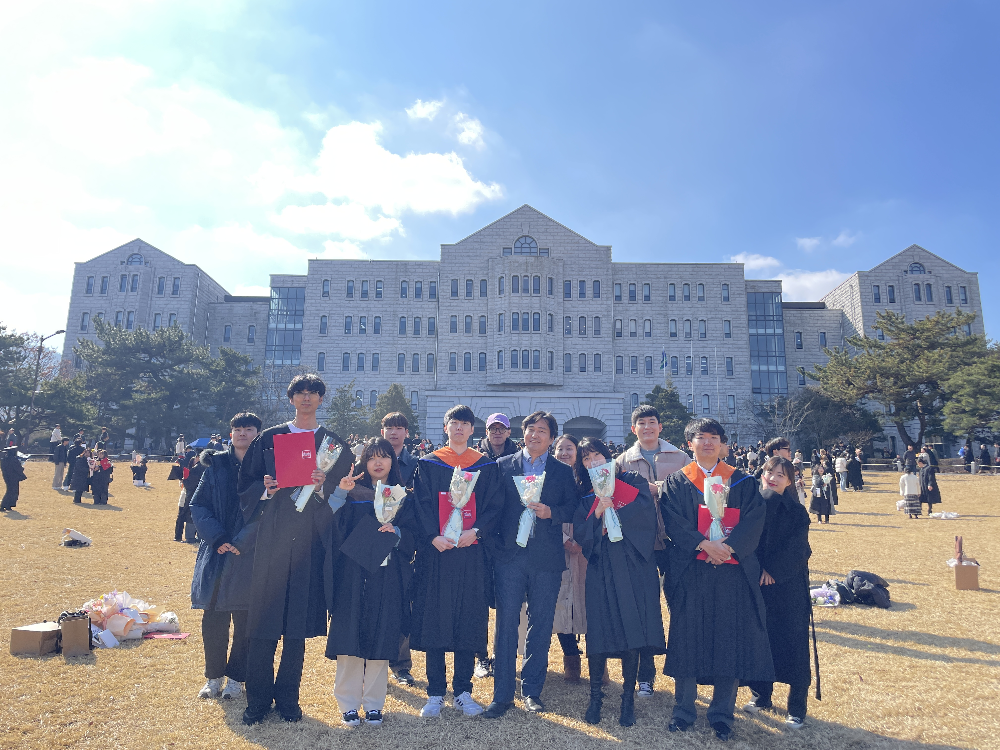
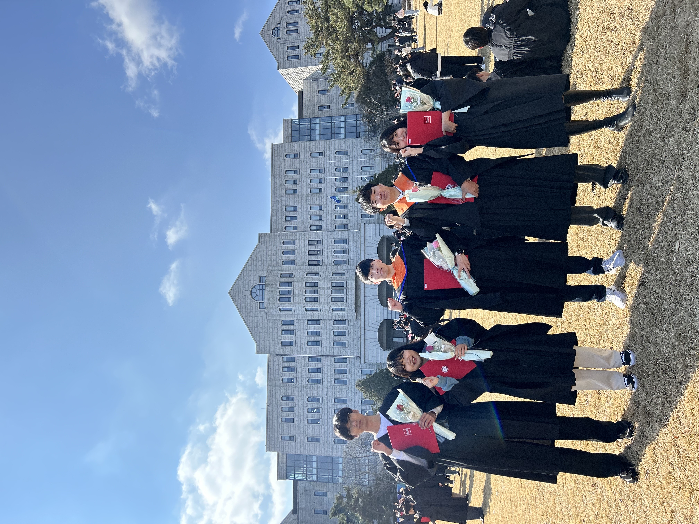
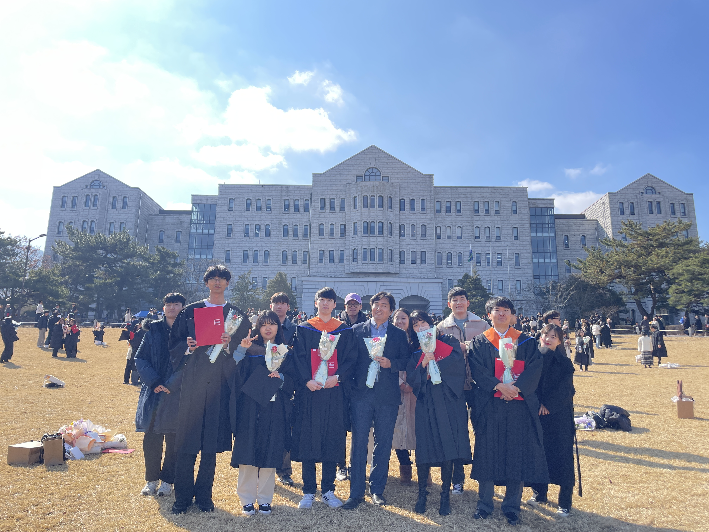
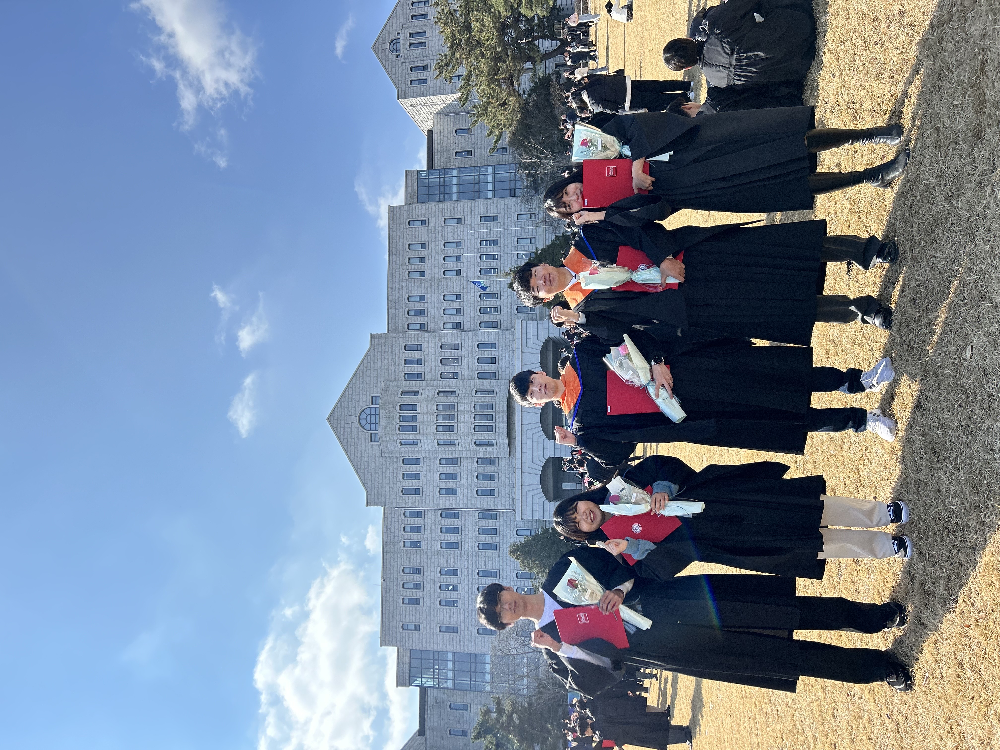

Other Activities
Patents
- [PT39] 효율적인 악성위협 탐지를 위한 valuable alert 선별방법 (10-2548321, 2023.6)
- [PT38] DGA 생성 도메인 탐지 및 분류하는 방법 (10-2486124, 2023.1)
- [PT37] Packer Classification Apparatus and Method using PE Section Information (US 11,429,819, 2022.8)
- [PT36] 저작권 보호를 위한 변형된 게시글 정규화 방법 및 장치 (10-2337543, 2021.12)
- [PT35] 이상치 스코어 기반의 EDR에서의 이상징후 탐지장치 및 방법, (10-2251467, 2021.5)
- [PT34] TF-IDF 기반 벡터변환 및 데이터 분석장치 및 방법, (10-2246405, 2021.4)
- [PT33] PE섹션정보를 이용한 패커유형 분류 장치 및 방법, (10-2202911, 2021.1)
- [PT32] 디해시 기반 악성코드 분석장치 및 방법, (10-2185831, 2020.11)
- [PT31] 시계열 통계 기반 공격의심 이상징후를 탐지하기 위한 방법, (10-1621019, 2016.5)
- [PT30] 네트워크 트래픽 수집 및 분석 시스템, (10-1623068, 2016.5)
- [PT29] 공격의심 이상징후 탐지 시스템, (10-1623071, 2016.5)
- [PT28] API 기반 악성 코드 탐지 시스템 및 방법, (10-1623073, 2016.5)
- [PT27] 대량의 악성 코드 분석 시스템 및 방법, (10-1589649, 2016.1)
- [PT26] API 기반 악성 코드 변종 탐지 조회 시스템 및 방법, (10-1589656, , 2016.1)
- [PT25] 모바일 침해사고 분석시스템 및 방법, (10-1574652, 2015.11)
- [PT24] 상용 이메일 기반 악성코드 감염단말 탐지 방법, (10-1535503, 2015.7)
- [PT23] 시분할 방식의 배양기반 악성코드 분석시스템, (10-1512454, 2015.4)
- [PT22] 배양기반 악성코드 분석시스템의 네트워크를 통한 OS재로딩 방법, (10-1512456, 2015.4)
- [PT21] 배양기반 악성코드 분석시스템의 악성코드 업데이트 여부분석 방법, (10-1512462, 2015.4)
- [PT20] 싱크홀 서버에 기반한 악용 경유지 추적 시스템 및 방법, (10-1468114, 2014.11)
- [PT19] 트래픽 분석을 통한 악성 트래픽 탐지 방법 및 그 시스템, (10-1428721, 2014.8)
- [PT18] 하위 웹주소 점검을 통한 악성코드 은닉 사이트 탐지 시스템 및 방법, (10-1428725, 2014.8)
- [PT17] 악성코드 최종 유포지 및 경유지 탐지 시스템 및 방법, (10-1428727, 2014.8)
- [PT16] 이메일 기반 문서형 악성코드 고속탐지 시스템 및 방법, (10-1434179, 2014.8)
- [PT15] Detection system and method of suspicious malicious website using analysis of javascript obfuscation strength, (US8756685B2, 2014.6)
- [PT14] 대규모 웹사이트 방문점검 방법, (10-1401948, 2014.5)
- [PT13] 악성코드 유포지 및 경유지 주기 점검 시스템 및 방법, (10-1401949, 2014.5)
- [PT12] 대규모 웹사이트 고속 점검방법, (10-1388962, 2014.4)
- [PT11] 악성코드 통합정보 생성 시스템 및 이를 포함하는 악성코드 통합관리 시스템, (10-1328641, 2013.11)
- [PT10] 에스엔에스 검색 서비스를 이용한 유알엘 수집 시스템 및 방법, (10-1329034, 2013.11)
- [PT9] 변종 악성 코드를 탐지하기 위한 시스템 및 방법, (10-1329037, 2013.11)
- [PT8] 에스엔에스 트랩 수집 시스템 및 그에 의한 유알엘 수집 방법, (10-1329040, 2013.11)
- [PT7] 악성코드 경유-유포지의 위험도 평가 시스템 및 그 방법, (10-1329108, 2013.11)
- [PT6] 피디에프 문서형 악성코드 탐지 시스템 및 방법, (10-1296716, 2013.8)
- [PT5] Apparatus for detecting and filtering application layer DDoS attack of web service, (US 8438639 B2, 2013.5)
- [PT4] 웹 서비스 대상 응용계층 디도스 공격 탐지 및 대응 장치, (10-1077135, 2011.10)
- [PT3] 히스토리 기반 DDoS 대응 방법, (10-1077136, 2011.10)
- [PT2] URI 타입 기반 디도스 공격 탐지 및 대응 장치, (10-1061375, 2011.8)
- [PT1] 분포 기반 디도스 공격 탐지 및 대응 장치, (10-1061377, 2011.8)
Awards
- 이주영, 이선우, 황상연, 이태진 - 한국정보보학회 하계학술대회 2024 우수논문상 (2024.6)
- 이주영, 한태현, 정혜란, 이태진 - 한국정보처리학회 ACK 2023 우수논문상 (2023.9)
- 이태진 - 호서대학교 우수교원 표창(연구분야), 호서대 총장상 (2023.9)
- 이선우, 이현우, 정시온, 이태진 - 한국정보보호학회 학술대회 호서대 총장상 (2023.9)
- 이현우, 임승범, 이예은, 정시온 - SW 개발보안 경진대회(소개딩) 2023 한국인터넷진흥원상(장려상) 수상 (2023.8)
- 한태현, 박영지, 이규한, 이현우 - 2023 AIㆍSW 프로젝트 성과 전시회 최우수논문상 수상 (2023.7)
- 서주현, 신민일, 박진주, 이태진 - 한국융합보안학회 하계학술대회 우수논문상 수상 (2023.6)
- 한태현, 박영지, 이규한, 이현우, 이태진 - 한국정보보호학회 하계학술대회 과기부장관상 수상 (2023.6)
- 이태진 - 행정안전부 장관상(우수성과상) 수상 (2023.4)
- 이은규 - 호서대학교 일반대학원 최우수 졸업논문상 수상 (2023.2)
- 김진강, 임승범, 이예은, 한태현 - 사이버보안 AI+Security 우수논문 공모전 우수상 수상 (2022.12) - link
- 김진강, 임승범, 이예은, 한태현 - 사이버보안 AI·빅데이터 챌린지 최우수상 수상 (2022.12) - link
- 한태현, 이은규, 이태진 - 한국시뮬레이션학회 우수논문상 수상 (2022.11)
- 황찬웅 - 호서대학교 일반대학원 최우수 졸업논문상 수상 (2022.2)
- 황찬웅, 배성호, 이태진 - 산업제어시스템 보안위협탐지 AI 경진대회(HAICon 2021) 최우수상 수상 (2021.11) - link
- 이은규, 이용수, 김형래 - Hoseo AIWeek 우수 프로젝트 수상 (2021.10) - news
- 유호제, 이지웅, 정종배, 김도연 - 한국중부발전 사이버보안 경진대회(취약점 분석) 장려상 수상 (2021.10) - link
- 황찬웅, 이태진 - 한국정보보호학회 사이버안보 논문공모전 장려상 수상 (2021.10)
- 이태진 - 호서대학교 우수교원 표창(산학분야), 호서대 총장상 (2021.9)
- 이현나, 배성호, 황찬웅, 이태진 - 정보보호학회 충청학술대회 ETRI 원장상 수상 (2021.8)
- 안준연 - BoB 9기 인증식, 그랑프리팀(최우수프로젝트팀) 수상 (2021.3) - link
- 김도연, 황찬웅, 이용수, 김홍비, 이태진 - K-Cyber Security Challenge 2020, AI-dataset 한국인터넷진흥원장상 수상 (2020.12)
- 최아린, 조선영, 조해린, 최승희, 이태진, 김형종 - 한국IT서비스학회 최우수논문상 (2020.11)
- 황찬웅, 김도연, 김효식, 김선진, 이태진 - 산업제어시스템 보안위협탐지 AI 경진대회(HAICon 2020) 최우수상 수상 (2020.10) - link
- 김진강, 황찬웅, 이태진 - 한국인터넷정보학회 추계학술대회 우수논문상 수상 (2020.10)
- 이태진 - 호서대학교 우수교원 표창, 호서대 총장상 (2020.7)
- 황준호 - 호서대학교 일반대학원 최우수 졸업논문상 수상 (2020.2)
- 안준연, 고광필 - Bigdata Idea Challenge 2019 장려상 (2019.11.5) - link
- 황준호, 김수정, 하지희, 김인호, 신현석 - DataChallenge 2018(AI기반 악성코드 탐지부문) 우수상 (KISA 원장상, 2018.12) - link
- 김호경, 황선빈, 이태진 - 한국정보과학회 최우수논문상 (2017.12)
- 산학협력 우수 공로패 (지니언스, 2017.12)
- K-ICT 표준화전략 맵 공로상 (TTA 원장상, 2016.11)
- 정보통신/방송R&D 우수성과상 (미래부 장관상, 2014.11)
- 국가연구개발 우수성과상 (미래부 장관상, 2014.7) - link
- 최우수 직원상 (KISA 원장상, 2013.12)
Photo Gallery


 


